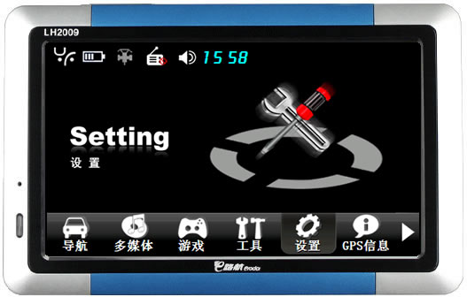
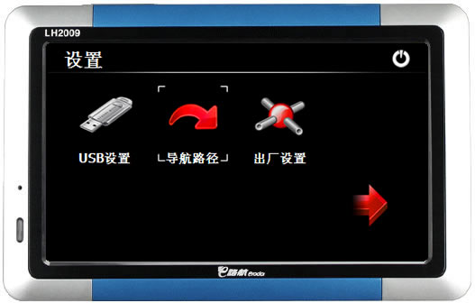
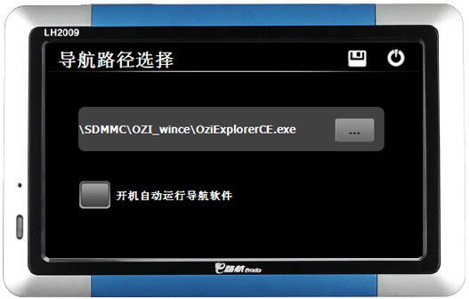
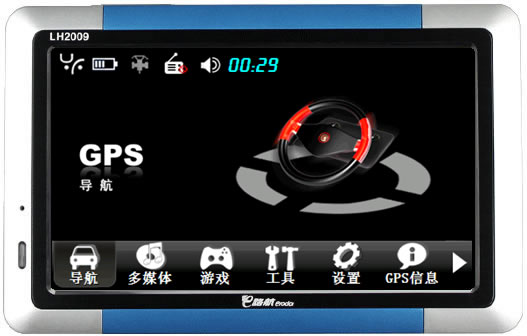
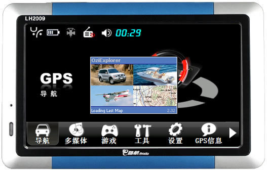

|
| 首页 | GeoTIFF | 今日花园Maps | OruxMaps | OZI | 资源 | 软件 | 联系 |
| 当前位置：OZI ---> 在WINCE系统的导航仪上安装OziExplorer软件 |
在WINCE系统的导航仪上安装OziExplorer软件WINCE系统的导航仪安装OziExplorer软件很简单，只需要把OziExplorer程序文件夹全部复制到GPS导航仪的SD卡上就行了。在OziExplorer程序文件夹下有一个名为“Maps”的文件夹，这里是专门放置地图文件的地方，将制作好的ozf2格式地图和map格式的文件都复制到这里。 OZI地图可以有多个，每一个ozf2格式地图都必须有与其对应的map格式的文件，OZI在导航时会根据经纬度坐标自动选择显示哪幅地图。 如果某个地点在两幅以上的地图中都能找到，OziExplorer会优先选用大比例(分辨率高)的地图。如果某个地点在所有的导航地图中都找不到，则会调用自带的默认全球地图。 OZI程序文件夹中的“OziExplorerCE.exe”就是OziExplorer导航软件的主程序。 可以在GPS导航仪中设置导航软件的路径，以便于我们快速启动OziExplorer导航软件。下面以E路航LH2009这款GPS导航仪为例，介绍一下如何设置导航软件的路径。 设置导航软件路径：开机-->设置-->导航路径-->选择OziExplorer程序-->存盘退出(点击软盘图标)，如下图所示： |



|
设置好导航软件的路径后，点击“导航”按钮，OziExplorer导航软件就启动运行了。如下图所示： |


| www.todaygarden.net |
版权所有 2010-2020 今日花园 |